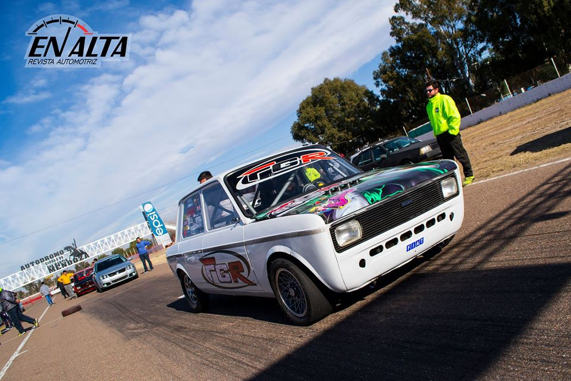
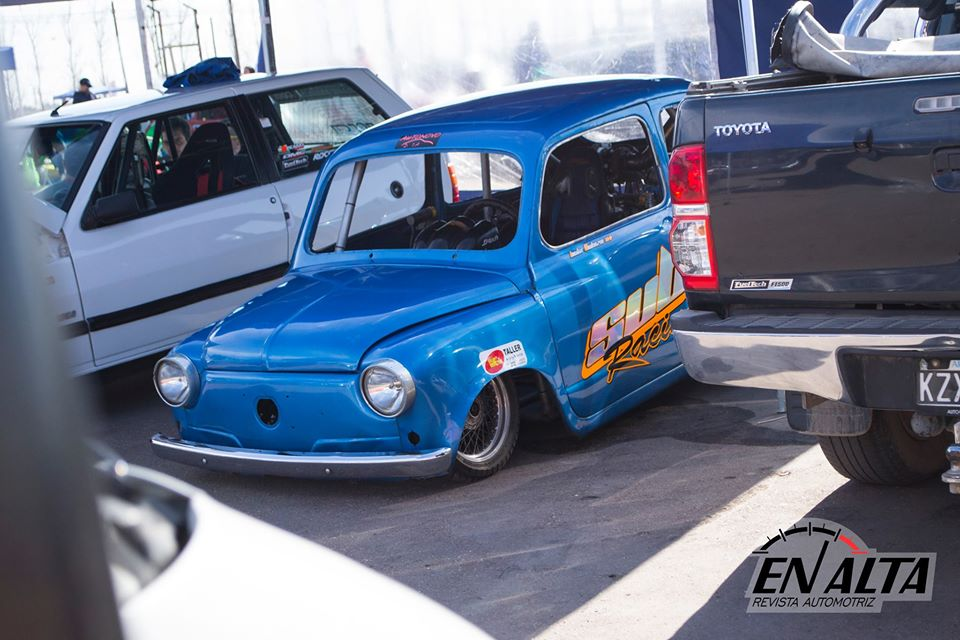
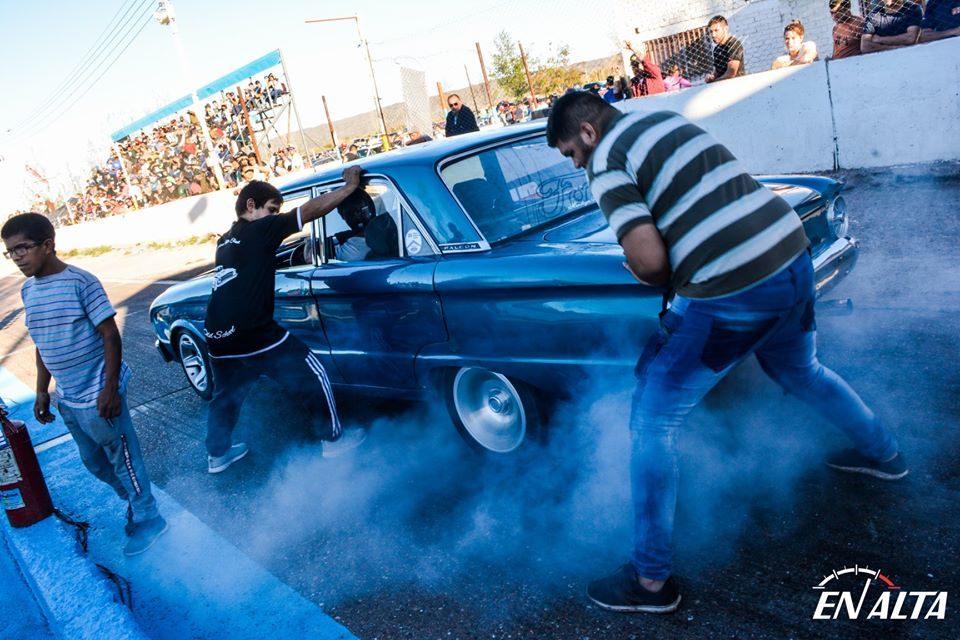

El pasado 7 de Marzo se disputo en el autódromo de San Martin el Jorge A. Pena la copa Pistón. Cuyo evento fue organizado por Guillermo Marconi. Conto con una variedad muy amplia de vehículos, los cuales llegaban de todos lados del país, se puede decir que a causa de la gran convocatoria que obtuvo, las pruebas libres se alargaron demasiado, pudiendo así largar las distintas categorías, casi a la 1 de la mañana.
  